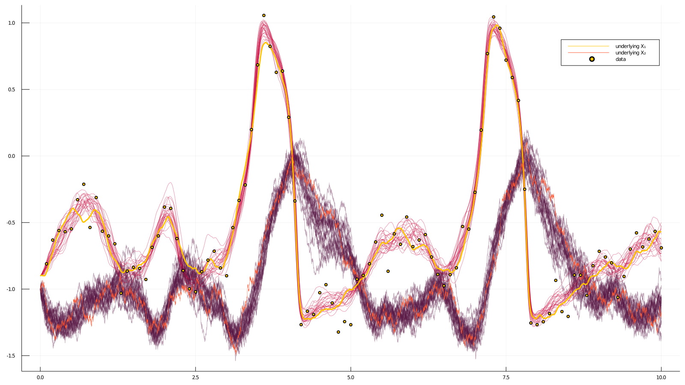

How to do blocking?
Blocking is a technique that modifies smoothing algorithms and facilitates more efficient exploration of the path space. A path is updated in blocks instead of being imputed in full. Blocking and the preconditioned Crank-Nicolson scheme both aim to achieve the same goal, but the two approaches differ in execution.
# Perform smoothing for the data in the `recording`, using Guided Proposals with
# the auxiliary law `AuxLaw` and using a blocking technique based on three
# artificial observations.
function simple_smoothing_with_blocking(
AuxLaw, recording, dt;
ρ=0.5, num_steps=10^4, AuxLawBlocking=AuxLaw, artificial_noise=1e-6
)
# -------------------------------------------------------------------------#
# Initializations #
# -------------------------------------------------------------------------#
# time-grids for the forward-simulation of trajectories #
# we pass a time-transformation for improved accuracy #
tts = OBS.setup_time_grids(recording, dt, standard_guid_prop_time_transf) #
# laws of guided proposals (without any blocking) #
PP = build_guid_prop(AuxLaw, recording, tts) #
#
# starting point #
# NOTE `rand` for `KnownStartingPt` simply returns the starting position #
y1 = rand(recording.x0_prior) #
# initialize the `accepted` trajectory #
XX, WW, Wnr = rand(PP, y1) #
# initialize the containers for the `proposal` trajectory #
XX°, WW° = trajectory(PP) #
#
paths = [] #
num_accpt = 0 #
# -------------------------------------------------------------------------#
#--------------------------------------------------------------------------#
# Blocking setup #
#--------------------------------------------------------------------------#
# let's do some very simple blocking based on three points #
#
# place three ~equidistant points #
num_intv = length(PP) #
one_quarter_pt = div(num_intv, 4) #
one_half_pt = div(num_intv, 2) #
three_quarter_pt = one_half_pt + one_quarter_pt #
#
# define helper functions to build views to the relevant sections #
# of PP, XX, etc. corresponding to different blocks #
block_set_1_builder(x, offset=0) = [ #
view(x, 1:(one_half_pt-offset)), #
view(x, (one_half_pt+1):length(x)) #
] #
block_set_2_builder(x, offset=0) = [ #
view(x, 1:(one_quarter_pt-offset)), #
view(x, (one_quarter_pt+1):(three_quarter_pt-offset)), #
view(x, (three_quarter_pt+1):length(x)) #
] #
make_block_set(f, num_ρ=2) = ( #
PP = f(PP, 1), #
XX = f(XX), #
XX° = f(XX°), #
WW = f(WW), #
WW° = f(WW°), #
ρρ = fill(ρ, num_ρ), #
) #
#
# define two sets of blocks #
B1 = make_block_set(block_set_1_builder) #
B2 = make_block_set(block_set_2_builder, 3) #
#
# define guided proposals on the last interval of each block #
artif_PP1 = [ #
guid_prop_for_blocking(B1.PP[1][end], AuxLawBlocking, artificial_noise)#
] #
artif_PP2 = collect([ #
guid_prop_for_blocking(B2.PP[i][end], AuxLawBlocking, artificial_noise)#
for i in 1:2 #
]) #
#
num_accpt = [[0,0], [0,0,0]] #
lls = [[0.0, 0.0], [0.0, 0.0, 0.0]] #
#--------------------------------------------------------------------------#
# MCMC
for i in 1:num_steps
# -----------------------
# | imputation on SET 1 |
# -----------------------
# set an auxiliary point
set_obs!(artif_PP1[1], B1.XX[1][end].x[end])
# the guiding term must be recomputed...
recompute_guiding_term!(B1.PP[1], artif_PP1[1])
recompute_guiding_term!(B1.PP[2])
# find a Wiener path W reconstructing the trajectory X
for j in 1:2
for k in 1:length(B1.PP[j])
DD.invsolve!(B1.XX[j][k], B1.WW[j][k], B1.PP[j][k])
end
# on block 1 the last guided proposal is removed from B1.PP[1]
# and instead the artif_PP1[1] must be used
j==1 && DD.invsolve!(B1.XX[j][end], B1.WW[j][end], artif_PP1[1])
end
y = y1
# impute the path
for j in 1:2 # there are two blocks in the first set
# sample a path on a given block
_, ll° = rand!(
B1.PP[j], B1.XX°[j], B1.WW°[j], B1.WW[j], B1.ρρ[j], Val(:ll), y;
Wnr=Wnr
)
# on the first block sample the last segment using a different law
if (j==1)
y = B1.XX°[j][end-1].x[end]
_, ll°_last = rand!(
artif_PP1[1], B1.XX°[j][end], B1.WW°[j][end], B1.WW[j][end],
B1.ρρ[j], Val(:ll), y; Wnr=Wnr
)
ll° += ll°_last
end
# compute log-likelihood on this interval for the accepted path
ll = loglikhd(B1.PP[j], B1.XX[j])
if (j==1) # on the first block the last segment has a different law
ll += loglikhd(artif_PP1[1], B1.XX[j][end])
end
lls[1][j] = ll # save for printing
if rand() < exp(ll°-ll)
for k in eachindex(B1.XX[j])
B1.XX[j][k], B1.XX°[j][k] = B1.XX°[j][k], B1.XX[j][k]
B1.WW[j][k], B1.WW°[j][k] = B1.WW°[j][k], B1.WW[j][k]
end
num_accpt[1][j] += 1
lls[1][j] = ll°
end
y = B1.XX[j][end].x[end]
end
# -----------------------
# | imputation on SET 2 |
# -----------------------
# set auxiliary points
for j in 1:2
set_obs!(artif_PP2[j], B2.XX[j][end].x[end])
recompute_guiding_term!(B2.PP[j], artif_PP2[j])
end
# B2.PP[3] does not need to be recomputed, but of course, can be for
# good measure
# recompute_guiding_term!(B2.PP[3])
# find a Wiener path W reconstructing the trajectory X
for j in 1:3
for k in 1:length(B2.PP[j])
DD.invsolve!(B2.XX[j][k], B2.WW[j][k], B2.PP[j][k])
end
j<3 && DD.invsolve!(B2.XX[j][end], B2.WW[j][end], artif_PP2[j])
end
y = y1
# impute the path
for j in 1:3 # there are three blocks in the second set
# sample a path on a given block
_, ll° = rand!(
B2.PP[j], B2.XX°[j], B2.WW°[j], B2.WW[j], B2.ρρ[j], Val(:ll), y;
Wnr=Wnr
)
# on the 1st & 2nd block sample the last segment with a different law
if (j<3)
y = B2.XX°[j][end-1].x[end]
_, ll°_last = rand!(
artif_PP2[j], B2.XX°[j][end], B2.WW°[j][end], B2.WW[j][end],
B2.ρρ[j], Val(:ll), y; Wnr=Wnr
)
ll° += ll°_last
end
# compute log-likelihood on this interval for the accepted path
ll = loglikhd(B2.PP[j], B2.XX[j])
if (j<3) # on the 1st & 2nd block the last segment has a different law
ll += loglikhd(artif_PP2[j], B2.XX[j][end])
end
lls[2][j] = ll
if rand() < exp(ll°-ll)
for k in eachindex(B2.XX[j])
B2.XX[j][k], B2.XX°[j][k] = B2.XX°[j][k], B2.XX[j][k]
B2.WW[j][k], B2.WW°[j][k] = B2.WW°[j][k], B2.WW[j][k]
end
num_accpt[2][j] += 1
lls[2][j] = ll°
end
y = B2.XX[j][end].x[end]
end
# progress message
if i % 100 == 0
println(
"$i. ",
"ll₁₁=$(lls[1][1]) (ar₁₁=$(num_accpt[1][1]/100)), ",
"ll₁₂=$(lls[1][2]) (ar₁₂=$(num_accpt[1][2]/100)); ",
"ll₂₁=$(lls[2][1]) (ar₂₁=$(num_accpt[2][1]/100)), ",
"ll₂₂=$(lls[2][2]) (ar₂₂=$(num_accpt[2][2]/100)), ",
"ll₂₃=$(lls[2][3]) (ar₂₃=$(num_accpt[2][3]/100))"
)
num_accpt[1] .= 0
num_accpt[2] .= 0
end
# save intermediate path for plotting
i % 400 == 0 && append!(paths, [deepcopy(XX)])
end
paths
endExample
We can apply the routine above to the example used also in the previous how-to-guide on smoothing. Before doing so however, we must additionally override the behaviour of nonhypo and nonhypo_σ functions from the package DiffusionDefinition.jl.
@inline DD.nonhypo(x, P::FitzHughNagumo) = x[SVector{1,Int64}(2)]
@inline DD.nonhypo_σ(t::Float64, x, P::FitzHughNagumo) = SMatrix{1,1,Float64}(P.σ)We are now ready to run the algorithm
paths = simple_smoothing_with_blocking(
FitzHughNagumoAux, recording, 0.001; ρ=0.84, num_steps=10^4, artificial_noise=1e-12
) It takes about 50sec on my laptop.